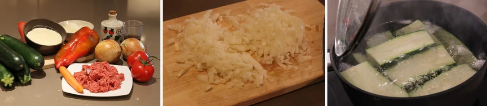

Inicio
Segundo plato: Calabacines rellenos de carne picada

- 4 calabacines medianos
- 2 cebollas
- 1 diente de ajo
- 1/2 kg de carne picada: mezcla de ternera y cerdo
- 6 cucharadas de aceite de oliva virgen extra
- 2 tomates grandes
- 1 zanahoria grande
- 1 pimiento rojo
- 1/2 vaso de vino blanco o vino tinto
- 300 ml de bechamel
- 100 g de queso rallado para gratinar (a vuestra elección)
- Sal y pimienta negra recién molida (al gusto)
Preparación de los calabacines
- Para preparar los calabacines tenemos varias posibilidades, normalmente en casa los partimos en dos de manera longitudinal pero últimamente y por el tamaño de los calabacines que me regala mi padre.
- Los cortamos a lo ancho en cilindros más o menos iguales de unos 10 cm de tamaño. Tal como podéis ver en el vídeo que os presento a continuación o en la receta de calabacines rellenos de pollo y verduras al mencía. Os lo dejo a vuestra elección, de cualquiera de las maneras van a estar muy buenos.

- Calentamos una cazuela grande con agua, cuando empiece a hervir echamos 1 puñado generoso de sal y un chorrito de aceite de oliva virgen extra. Introducimos los calabacines entre 2 a 3 minutos (dependiendo del tamaño del calabacín) y retiramos. Secamos muy bien con papel absorbente y reservamos en un plato hasta que estén tibios.
- Con mucho cuidado vamos a vaciar el interior del calabacín. Con la ayuda de una cuchara retiramos el centro del calabacín (como veis en las fotos o en el vídeo) pero no en exceso, sólo un poco para que quepa el relleno. Reservamos los calabacines que hemos vaciado por un lado y la carne del calabacín (que incorporaremos al relleno) por el otro.
Preparación del relleno de carne y verduras
- Escaldamos los tomates y una vez sin piel los picamos en trozos estilo brounoisse, en cuadraditos pequeños. Picamos las 2 cebollas, el calabacín que tenemos reservado (el de vaciar los calabacines), el pimiento rojo y el diente de ajo, todo bien finito. Pelamos y picamos la zanahoria lo mejor posible, cuanto más finas sean mejor porque se pasarán al hacer la salsa.
- En una cazuela echamos el aceite de oliva virgen extra e introducimos las cebollas, el calabacín y el ajo. Dejamos que se pase un poco (3 minutos aproximadamente), introducimos las zanahorias y el pimiento rojo. Pochamos todas las verduras a temperatura baja unos 15 minutos y esperamos por la carne
- Salpimentamos (sal y pimienta) la carne (en este caso elegí una mezcla de cerdo y ternera, así el relleno queda más jugoso). Echamos la carne picada a la cazuela con las verduras y las especias a elección (un poquito de orégano, perejil…). Sofreímos durante 5-7 minutos a fuego suave, sin dejar de remover.
- Añadimos el tomate y el vaso de vino blanco o tinto (a vuestra elección), dejamos que se reduzca todo hasta que nos quede una salsa espesa. Aproximadamente unos 15 minutos a fuego suave. Comprobamos el punto de sal y si hace falta rectificamos. Reservamos y dejamos que se enfríe.
Preparación de la bechamel y montaje final
- Preparamos la bechamel. Ponemos el horno a 200º C para que esté caliente cuando metamos la fuente refractaria con los calabacines.
- Cuando esté lista la bechamel, rellenamos los calabacines con el sofrito de carne bien escurrido, con ayuda de una espumadera para que escurra todo el caldo.
- Este caldo lo dejaremos reducir en un cazo por si queremos adornar el plato, con 5 minutos a fuego fuerte tendremos una salsa espectacular. Rellenamos por encima de cada mitad con dos o tres cucharadas de bechamel. Espolvoreamos con el queso que más os guste y gratinamos 5 minutos a 220º C. Sacamos del horno y montamos el plato con dos mitades, es decir un calabacín por persona. Servidlos bien calientes.
Volver arriba